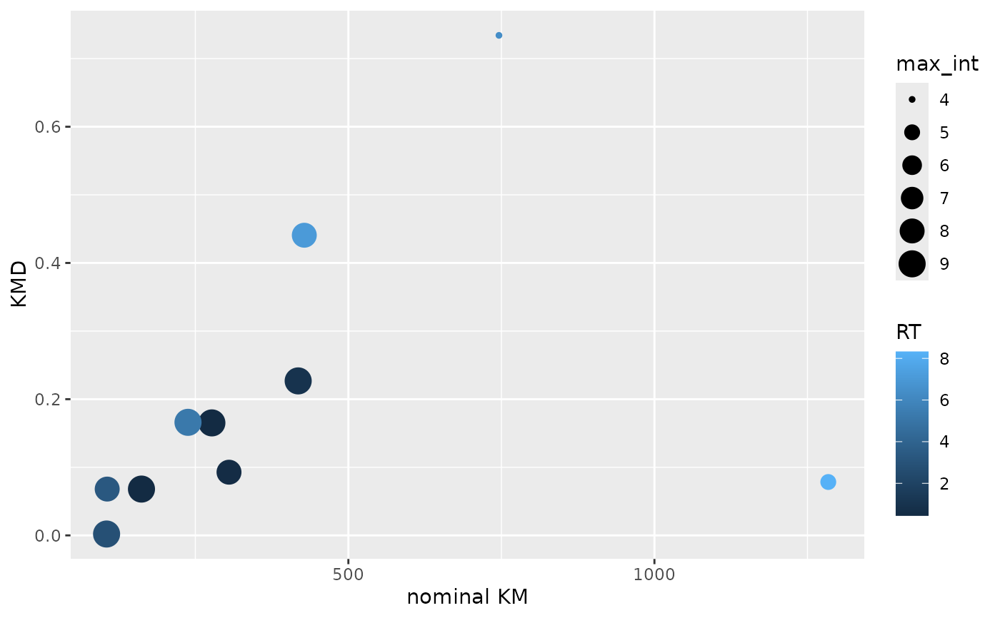

The nominal Kendrick mass is the Kendrick mass
(calc_km), rounded up to the nearest
whole number. The nominal Kendrick mass and the Kendrick mass are both required
to calculate the Kendrick mass defect (KMD).
The nominal Kendrick mass is not to be confused with the Kendrick mass defect
(calc_kmd) and
the Kendrick mass (calc_km).
References
Edward Kendrick, Anal. Chem. 1963, 35, 2146–2154.
C. A. Hughey, C. L. Hendrickson, R. P. Rodgers, A. G. Marshall, K. Qian, Anal. Chem. 2001, 73, 4676–4681.
Examples
# Calculate the nominal Kendrick masses for two measured masses with
# CH2 as the repeating unit.
# See Hughey et al. in the References section above
calc_nominal_km(c(351.3269, 365.3425))
#> [1] 351 365
# Construct a KMD plot from m/z values.
# RT is mapped to color and the feature-wise maximum intensity to size.
toy_metaboscape %>%
dplyr::group_by(UID, `m/z`, RT) %>%
dplyr::summarise(max_int = max(Intensity, na.rm = TRUE)) %>%
dplyr::ungroup() %>%
dplyr::mutate(KMD = calc_kmd(`m/z`),
`nominal KM` = calc_nominal_km(`m/z`)) %>%
ggplot2::ggplot(ggplot2::aes(x = `nominal KM`,
y = KMD,
size = max_int,
color = RT)) +
ggplot2::geom_point()
#> `summarise()` has grouped output by 'UID', 'm/z'. You can override using the
#> `.groups` argument.
